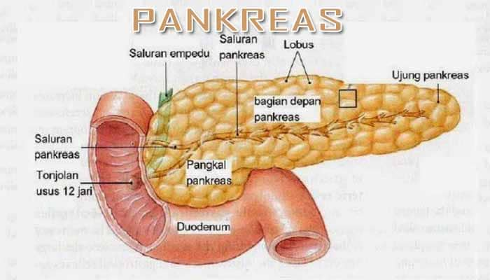

Pangkreas

Pankreas adalah salah satu organ tubuh yang punya peran besar dalam pencernaan. Organ yang terletak di belakang perut ini kira-kira besarnya seukuran tangan. Selama proses pencernaan, pankreas berfungsi membuat cairan yang disebut enzim. Nah, enzim ini kemudian digunakan untuk memecah gula, lemak, dan pati.
Bukan cuma enzim, pankreas juga membantu sistem pencernaan dengan membuat hormon. Hormon bekerja membawa pesan kimiawi melalui darah. Selain membawa pesan, hormon juga membantu mengatur kadar gula darah dan nafsu makan, menstimulasi asam lambung, serta memberi tahu perut kapan harus kosong.
Fungsi Pankreas yang Wajib Kamu Ketahui
Pankreas yang sehat menghasilkan bahan kimia dalam jumlah yang tepat dan pada waktu yang tepat untuk mencerna makanan yang kamu konsumsi. Berikut dua fungsi utama pankreas yang wajib kamu ketahui:
1. Fungsi Eksokrin
Pankreas mengandung kelenjar eksokrin yang menghasilkan enzim penting untuk pencernaan. Enzim ini termasuk tripsin dan kimotripsin untuk mencerna protein, amilase untuk pencernaan karbohidrat dan lipase untuk memecah lemak. Berikut fungsi-fungsi enzim tersebut:
Lipase. Enzim ini bekerja sama dengan cairan empedu yang diproduksi oleh hati untuk memecah lemak dalam makanan. Ketika tubuh tidak memiliki cukup lipase, tubuh akan kesulitan menyerap lemak dan vitamin penting yang larut dalam lemak, seperti vitamin A, D, E, dan K.
Protease. Enzim ini memecah protein dalam makanan dan membantu melindungi pencernaan dari kuman yang mungkin hidup di usus. Protein yang tidak tercerna dapat menyebabkan reaksi alergi pada beberapa orang.
Amilase. Enzim ini membantu memecah pati menjadi gula yang dapat digunakan tubuh untuk energi. Jika tubuh tidak memiliki cukup amilase, kamu mungkin mengalami diare akibat karbohidrat yang tidak tercerna.
Saat makanan masuk ke perut, cairan pankreas ini dilepaskan ke sistem saluran yang berujung di saluran pankreas utama (duktus). Duktus pankreas bergabung dengan saluran empedu umum untuk membentuk ampula Vater yang terletak di bagian pertama dari usus kecil (duodenum). Cairan pankreas dan empedu yang dilepaskan ke duodenum kemudian digunakan untuk membantu tubuh mencerna lemak, karbohidrat, dan protein.
2. Fungsi Endokrin
Komponen endokrin pankreas terdiri dari sel pulau kecil (pulau Langerhans) yang membuat dan melepaskan hormon penting ke aliran darah. Dua hormon yang paling utama adalah insulin dan glukagon. Insulin bertindak untuk menurunkan gula darah dan glukagon bertindak untuk meningkatkan gula darah. Mempertahankan kadar gula darah yang tepat sangat penting untuk fungsi organ utama termasuk otak, hati, dan ginjal. Berikut fungsi-fungsi hormon yang dihasilkan oleh pankreas:
Insulin. Hormon ini dibuat di dalam sel pankreas yang dikenal sebagai sel beta. Sel beta membentuk sekitar 75 persen dari sel hormon pankreas. Tanpa insulin yang cukup, kadar gula dalam darah dapat meningkat yang mungkin menjadi pertanda penyakit diabetes.
Glukagon. Sel alfa membentuk sekitar 20% sel di pankreas, salah satunya menghasilkan glukagon. Jika gula darah terlalu rendah, glukagon membantu meningkatkannya dengan mengirimkan pesan ke hati untuk melepaskan cadangan gula yang tersimpan.
Gastrin dan amylin. Gastrin dibuat di sel G di perut, tetapi beberapa juga dibuat di pankreas. Hormon ini merangsang perut untuk membuat asam lambung. Sedangkan amylin dibuat dalam sel beta dan berfungsi untuk membantu mengontrol nafsu makan serta pengosongan perut.